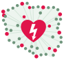
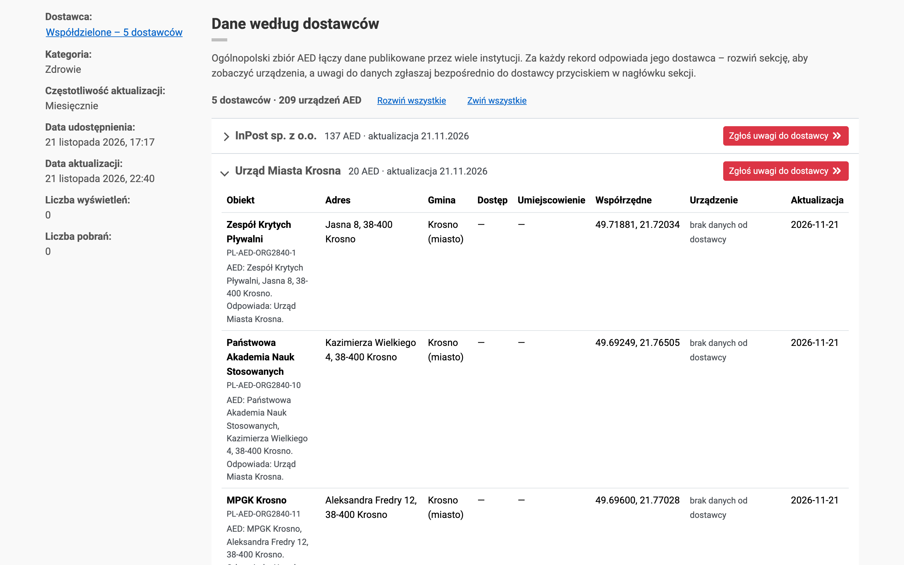
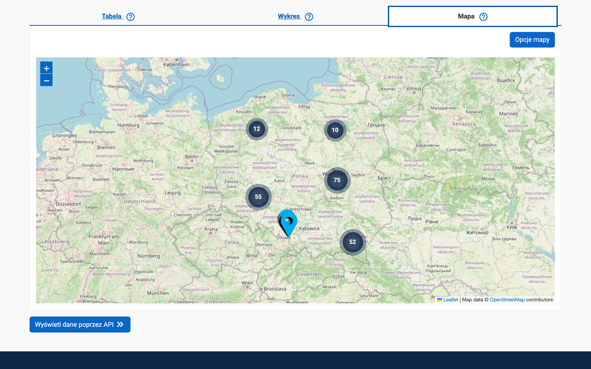
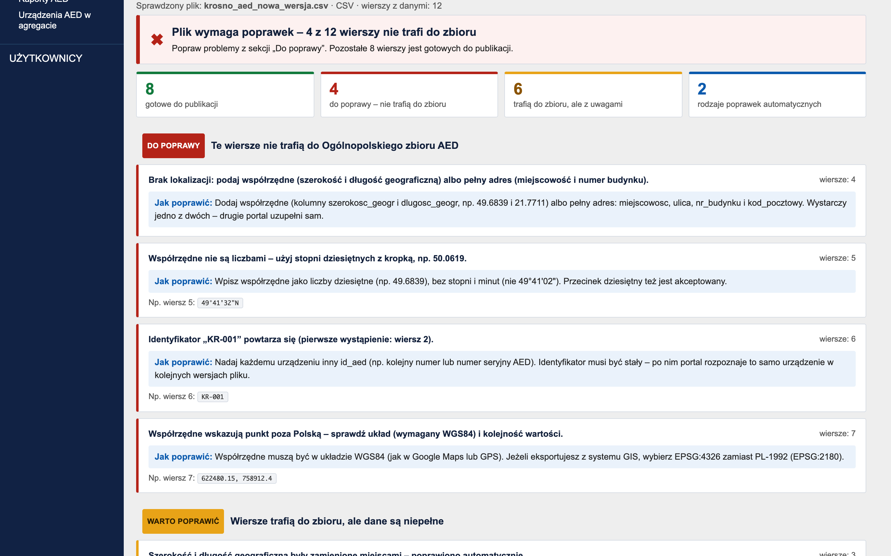
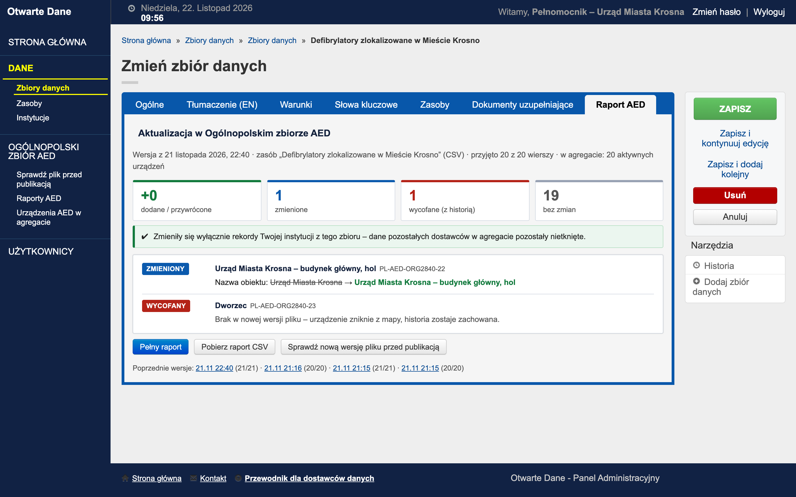
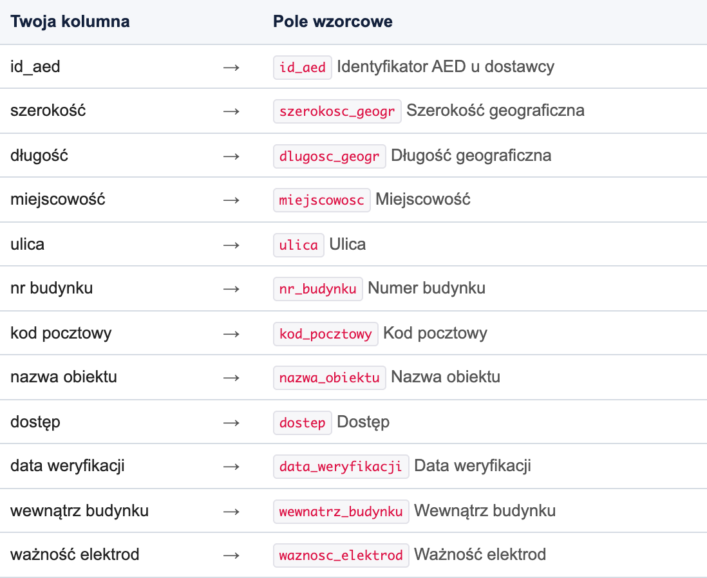
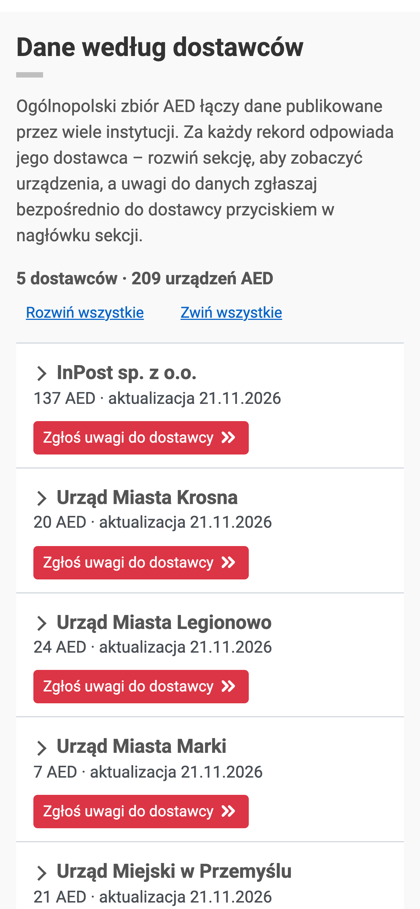
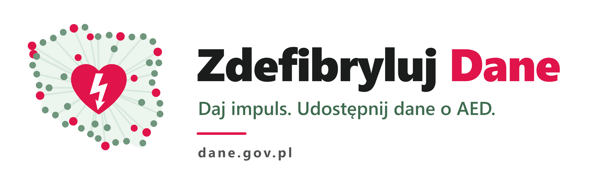
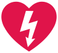

Wyzwanie Ministerstwa Cyfryzacji
w portalu dane.gov.pl
Jedno źródło danych o defibrylatorach i konkretna instytucja odpowiedzialna za każdy rekord.

Mechanizm agregujący
Wzorcowy zakres danych
Kampania „Zdefibryluj Dane”
Osobno
Każda gmina i firma publikuje własny zbiór.
Po swojemu
Inny format, inne kolumny, zamienione współrzędne.
Bez gospodarza
Nie wiadomo, kto poprawi błąd w danych.
Te same dane, cztery układy
krosno.csv
Długość geograficzna, Szerokość geograficzna, Nazwa, Lokalizacja…
legionowo.csv
nazwa, cecha_ulicy, nazwa_ulicy, nr_budynku, kod_terc…
marki.csv
"Długość geograficzna,Szerokość…"
(cały wiersz w cudzysłowie)
przemysl.geojson
GeoJSON z własnymi nazwami pól
Prawdziwe zbiory z dane.gov.pl
Problem
Rozwiązanie
Mechanizm agregujący
Moduł w kodzie dane.gov.pl
Łączy zbiory instytucji w jeden. Waliduje dane i weryfikuje lokalizacje w GUGiK.
Dlaczego tak: publikują tylko instytucje, tak jak dziś. Nie budujemy drugiego portalu.
Wzorcowy zakres danych
24 kolumny, jeden warunek
Obowiązkowe są tylko współrzędne albo pełny adres. Arkusz xlsx, szablon CSV i schemat JSON.
Dlaczego tak: niski próg dla gmin. Kod TERYT i brakujący adres portal wylicza sam.
Kampania
Zdefibryluj Dane
Logo, hasło „Daj impuls. Udostępnij dane o AED.” i księga znaku.
Dlaczego tak: dane publikują dysponenci, więc kampania mówi właśnie do nich.
01Mechanizm agregujący
Dlaczego tak: mentorzy podkreślili, że zbiór w portalu zawsze ma właściciela. Agregat nie przejmuje danych od gmin, tylko je łączy, a odpowiedzialność zostaje przy dostawcy.
01Mechanizm agregujący

1 2 301Mechanizm agregujący
/1.4/aed/records
/1.4/aed/records.geojson
/1.4/aed/providers
Format maszynowy: CSV i GeoJSON o stałych ID zasobów, bez PDF i DOC.

1 201Jakość danych
Blokuje wiersz
Ostrzega dostawcę
Portal wylicza sam
19 reguł z komunikatami dla dostawcy opisuje arkusz „Reguły walidacji” we wzorcowym zakresie.
01Jakość u źródła
Nic nie jest publikowane. Sprawdzenie działa w panelu dostawcy dla CSV, XLSX, ODS, GeoJSON, JSON i linku do API.

1 2 301Aktualizacja danych

1 2 302Wzorcowy zakres danych
Obowiązkowe
szerokosc_geogr + dlugosc_geogr
albo miejscowosc, ulica, nr_budynku, kod_pocztowy
Podnoszą ocenę jakości
id_aed, nazwa_obiektu, opis_lokalizacji, dostep, dysponent, data_weryfikacji, wewnatrz_budynku
Wylicza portal
teryt_terc, teryt_simc, instrukcja_dla_dyspozytora
Opcjonalne
pietro, sposob_dostepu, telefon_kontaktowy, producent, model, data_przegladu, waznosc_elektrod, waznosc_baterii, zdjecie_url
Kolumny dostawcy rozpoznane automatycznie

aed_wzorcowy_zakres.xlsx · aed_szablon.csv · aed_schema.json
Kroki użytkownika
Dostawca danych
gmina, szpital, firma
Odbiorca danych
dyspozytor 112, ratownik, mieszkaniec

Działa też na telefonie
03Kampania

Dane o AED leżą w szufladach jak serce bez rytmu. Jeden impuls, czyli publikacja w dane.gov.pl, przywraca je do życia.
Dlaczego tak: odbiorcą akcji są instytucje i firmy, które mają dane o AED. To one je publikują, więc logo i hasło mówią wprost do nich.
03Księga znaku
Kolorystyka
Czerwień akcji
#E0144A
Czerwień ciemna
#BE113F
Zieleń kropek
#70967D
Zieleń tekstu
#3F6B4F
Zieleń linii
#D7E8DC
Zieleń wypełnienia
#EDF5EF
Tło jasne
#F8FBF9
Grafit
#1A1D1B
Pole ochronne: ½ x
x = wysokość serca AED w znaku
Minimalna wielkość
210 px · 45 mm
40 px

16 px
Niedozwolone
Ograniczenia
Działa na forku portalu
Wdrożenie w dane.gov.pl wymaga decyzji operatora portalu.
Demo na 5 dostawcach
209 AED z prawdziwych zbiorów. Bez testów obciążenia w skali kraju.
Zależność od usług GUGiK
Gdy UUG lub ULDK nie odpowiada, wiersz dostaje ostrzeżenie zamiast weryfikacji.
Dostępność 24/7 to szacunek
Portal nie wie, czy urządzenie działa. Wie tyle, ile poda dostawca.
Bez danych z OpenStreetMap
Licencja ODbL nie pasuje do licencji portalu, a rekord musi mieć dostawcę.
Zakres użycia AI
Pomoc przy kodzie, tekstach, lektorze filmu i wariantach logo. Decyzje i weryfikacja: zespół.
Zdefibryluj Dane
Daj impuls.
Udostępnij dane o AED.
209
AED z prawdziwych zbiorów
5
dostawców danych
101
gmin w agregacie
19
reguł walidacji
34
sprawdzenia end-to-end